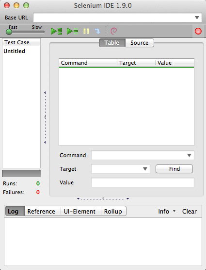

Selenium: What is it Good For?
Absolutly Something!
Dallas Drupal Days
September 7, 2012
Whatcha Gonna Do?
- Selenium
- Selenium IDE: A comprehensive walkthrough of the misunderstood IDE.
- Storing Tests: A guide to Automated Testing at it's most basic level.
- PHPUnit
- The Important Features: What we need to get Selenium working with PHPUnit.
- Translation from Selenium IDE: The first steps to using PHPUnit for managing and running your tests.
- Hudson / Jenkins
- Continuous Integration: What does it mean to be continuously integrated?
- Getting Setup: A quick tutorial to get you set up to run selenium tests on rollout of code.
BUT FIRST!
<SHAMELESS SELF PROMOTION>
Allan Chappell
Webdeveloper / Testing Expert
Drupal User: 368854
Twitter: general_redneck
Blog: GeneralRedneck.com
<SHAMELESS SELF PROMOTION />
What is Selenium?
Selenium automates browsers. That's it.
Selenium
Selenium IDE
- Record Your Actions.
- Modify Your Targets.
- Fill In the Gaps With Tests.
Storing Tests
- First thing about storing tests.
- Second thing about storing tests.
- Third thing about storing tests.